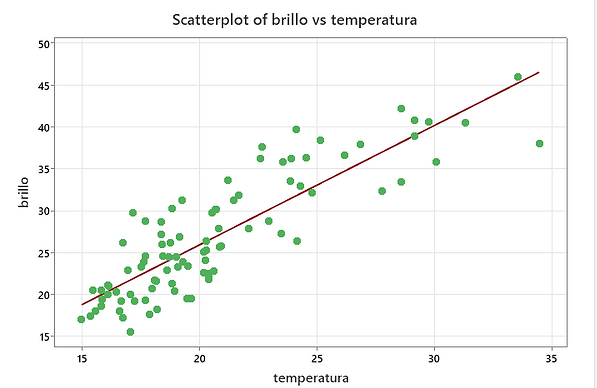

Estadísticas
Es la ciencia que se ocupa de recoger, organizar, analizar e interpretar datos numéricos para extraer conclusiones y tomar decisiones basadas en la evidencia.}
Gráficas:
Son representaciones visuales de datos o información que facilitan su comprensión y comunicación. Hay diferentes tipos de gráficas, como de barras, de líneas, de sectores, de dispersión, etc2.

Identificar los valores atípicos
Podríamos adivinar los valores atípicos al observar un gráfico del diagrama de dispersión y la línea de mejor ajuste. Sin embargo, nos gustaría contar con alguna directriz sobre la distancia que debe tener un punto para considerarse un valor atípico. Como regla general, podemos señalar como valor atípico cualquier punto que esté situado más de dos desviaciones típicas por encima o por debajo de la línea de mejor ajuste. La desviación típica utilizada es la de los residuales o errores.
Podemos hacerlo visualmente en el diagrama de dispersión al dibujar un par de líneas adicionales que estén dos desviaciones típicas por encima y por debajo de la línea de mejor ajuste. Todos los puntos de datos que se encuentren fuera de este par de líneas adicionales se marcan como posibles valores atípicos.
Son puntos de datos observados que se alejan de la línea de mínimos cuadrados o de la tendencia general de los datos. Tienen grandes “errores”, donde el “error” o residual es la distancia vertical de la línea al punto. Los valores atípicos deben examinarse de cerca, ya que pueden ser el resultado de datos erróneos o contener información valiosa sobre la población estudiada.
Variables de confusión:
Son variables o factores que pueden afectar a la variable dependiente o de respuesta, lo que puede llevar a conclusiones erróneas sobre la relación entre las variables independientes o explicativas. Se trata de controlar las variables de confusión mediante el emparejamiento, la aleatorización o el control estadístico.